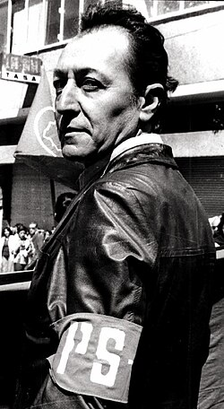

Líder sindical importante en Bolivia.

Defensora de los trabajadores mineros.
Representó a sectores trabajadores.

Luchó por los derechos del pueblo y contra la corrupción.
Primera mujer presidenta de Bolivia, apoyó derechos sociales.
Apoyó a sectores populares y trabajadores urbanos.

Los empresarios buscan actualizar la Ley General del Trabajo. Proponen flexibilidad regulada. La COB y el sector fabril ‘sepultan’ negociaciones. En Argentina y México ya hubo.
Ver más
Entre los municipios expulsores de mano de obra están El Alto, Cochabamba, Nuestra Señora de La Paz, Sacaba y Santa Cruz de la Sierra.
Ver más
En más de 16 años, la carrera formó generaciones de profesionales cuya cantidad sigue siendo menor a lo que se necesita en el país.
Ver más